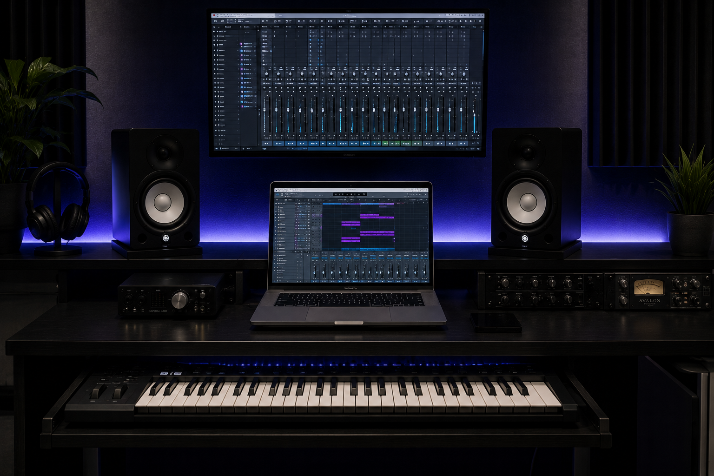
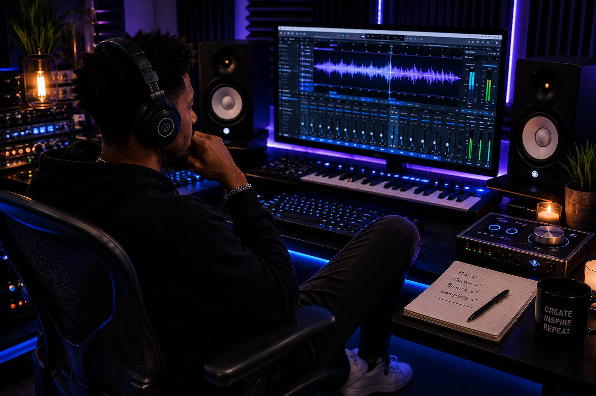
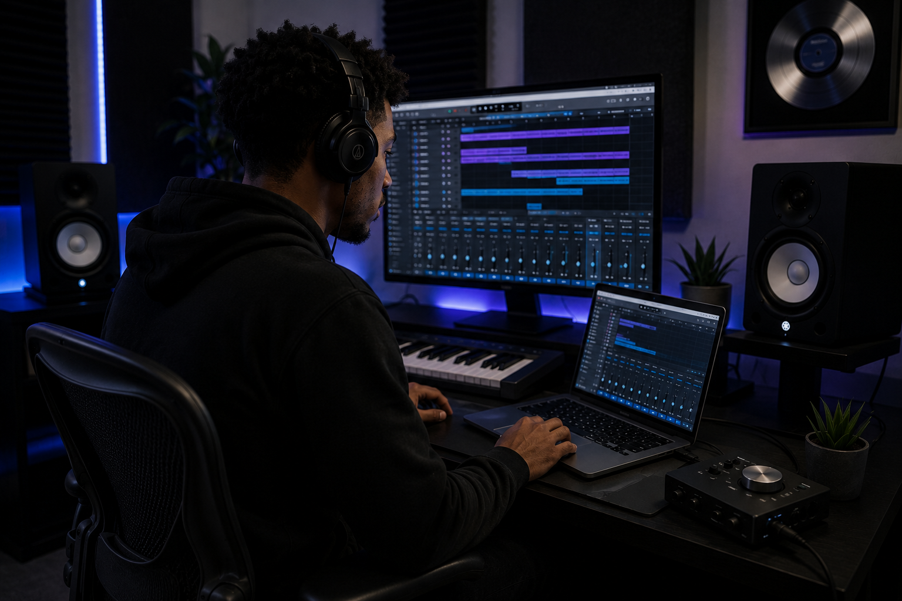
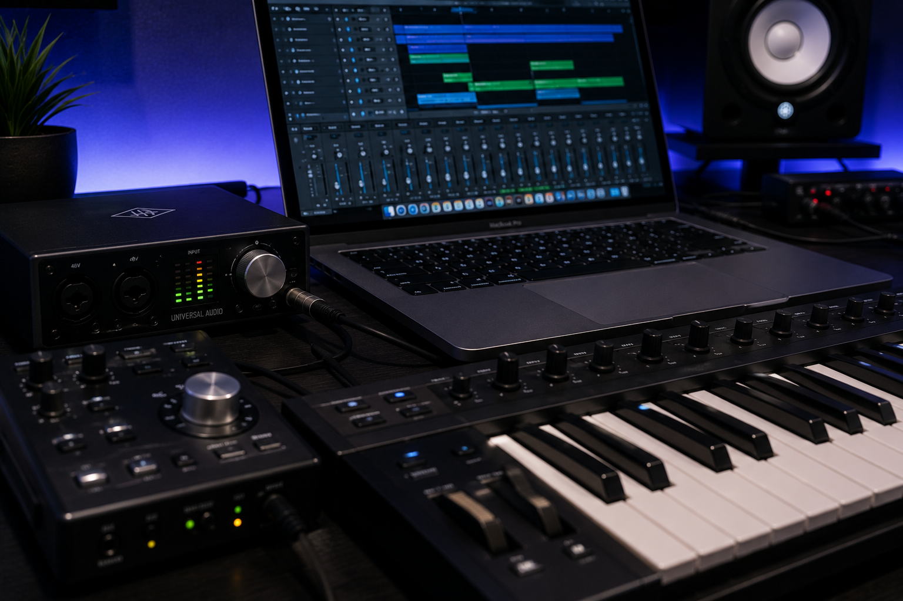
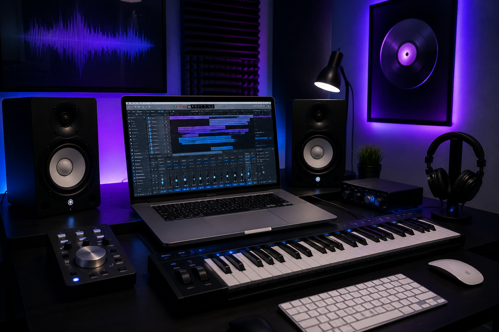
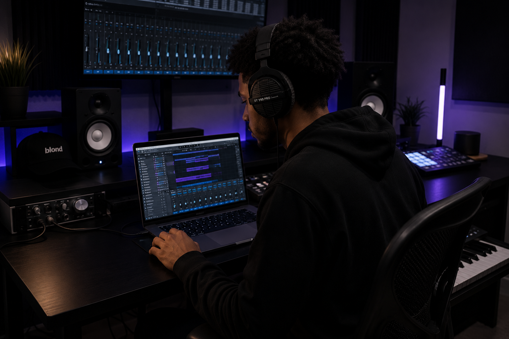

Home
Music production is one of my favorite hobbies because it gives me a way to turn ideas into something real. Whether it starts with a melody, a drum pattern, or inspiration from one of my favorite artists, every track begins somewhere.
I mainly use Logic Pro, but music production is bigger than any single program. It is about experimenting with sounds, creating moods, and seeing where creativity takes you.

AI Prompt: Modern music production studio with a MacBook running a digital audio workstation, MIDI keyboard, studio monitors, black and silver aesthetic, blue and purple ambient lighting, realistic photography.
What Music Production Can Include
- Genres like hip-hop, trap, lo-fi, and experimental music
- Choosing a DAW such as Logic Pro, FL Studio, GarageBand, or BandLab
- Building melodies, drums, samples, and full arrangements
About Me
I use music production as an outlet and as something fun to work on. It lets me experiment with different sounds and make the type of music I want to hear.
I am not a professional producer, but I enjoy learning the process and improving my sound over time. The best part is that anyone can start if they are willing to learn.

AI Prompt: Young music producer sitting at a professional studio workstation wearing headphones, black and silver setup, realistic photography.
My Setup
| Equipment | What I Use |
|---|---|
| Computer | MacBook |
| DAW | Logic Pro |
| Headphones | Sennheiser Studio Headphones |
| Audio Interface | Focusrite Scarlett Solo |
| Microphone | Audio-Technica AT2020 |
Time
There is no perfect time to make music. Inspiration can happen at any moment, and when an idea appears, it is usually best to capture it before it disappears.
Some of my favorite sessions happen late at night when everything is quiet. Other times, a random melody or idea shows up during the day and becomes the start of a track.

AI Prompt: Late night music production session with city lights outside a window, computer workstation glowing in a dark room, realistic photography.
When I Usually Produce
- Late at night when everything is quiet
- Weekends when there is more free time
- Whenever inspiration randomly hits
Common Production Environments
- Home studios
- Professional recording studios
- Free DAWs and mobile setups
Places
One of the best things about music production is that it can be done almost anywhere. A full studio is useful, but it is not required to start creating.
You can make music in a bedroom, a garage, a studio, or even on your phone in the car. The location matters less than having the motivation to create.

AI Prompt: Clean bedroom music studio with acoustic panels, studio monitors, MIDI keyboard, laptop, black and silver color scheme, realistic photography.
Places to Explore Music Production
| Place | Why It Helps |
|---|---|
| Online Communities | Learn techniques, ask questions, and connect with other producers. |
| Music Stores | Try gear, compare equipment, and find tools that match your setup. |
| Recording Studios | See professional workflows and understand how studio spaces are arranged. |
Starting Production
Getting started with music production is easier than most people think. The first step is finding a DAW, which stands for Digital Audio Workstation.
There is no single correct way to make music. Some producers start with drums, others start with a melody, and some begin with a sample or chord progression.

AI Prompt: Close-up of music production equipment including MIDI keyboard, audio interface, mixing controls, and computer workstation, realistic photography.
Basic Steps
- Choose a DAW.
- Learn the basic controls.
- Start with a melody, sample, or drum pattern.
- Add rhythm and extra layers.
- Arrange the song into sections.
- Export and listen back.
The Reason
Music production gives me freedom. I can create whatever I want and experiment with sounds that match what I want to hear.
It also gives me a way to express ideas and emotions through sound. Every beat, melody, and sound can tell a story or create a feeling.

AI Prompt: Music producer listening back to a finished song in a dark studio environment with headphones and professional equipment, realistic photography.
Freedom
There are no strict rules. I can create whatever I want and experiment with different sounds.
Originality
Music production lets me make the type of music I want to hear.
Storytelling
Every beat, melody, and sound can tell a story or create a feeling.
AI Prompts
The images used throughout this website were generated with AI to match a consistent music production theme. Each prompt was written to create a realistic black, silver, blue, and purple studio style.
AI was also used to help organize the site content, structure the single-page navigation, and check the page against the midterm requirements.
Each figure in this section includes the AI image prompt used to generate that image, so the image source and purpose are documented directly with the visual content.
Image Prompt: Modern music production studio with a MacBook running a digital audio workstation, MIDI keyboard, studio monitors, black and silver aesthetic, blue and purple ambient lighting, realistic photography.
Image Prompt: Young music producer sitting at a professional studio workstation wearing headphones, black and silver setup, realistic photography.
Image Prompt: Late night music production session with city lights outside a window, computer workstation glowing in a dark room, realistic photography.
Image Prompt: Clean bedroom music studio with acoustic panels, studio monitors, MIDI keyboard, laptop, black and silver color scheme, realistic photography.
Image Prompt: Close-up of music production equipment including MIDI keyboard, audio interface, mixing controls, and computer workstation, realistic photography.
Image Prompt: Music producer listening back to a finished song in a dark studio environment with headphones and professional equipment, realistic photography.
Code and Content Assistance Prompts
- Help me plan a standalone hobby website about music production for my ITIS 3135 midterm.
- Help me create section content for Home, About Me, Time, Places, Starting Production, The Reason, and AI Prompts.
- Help me format the site as a single-page app with only one section visible at a time.